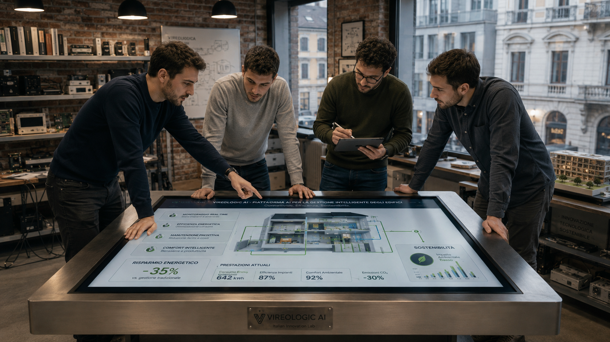
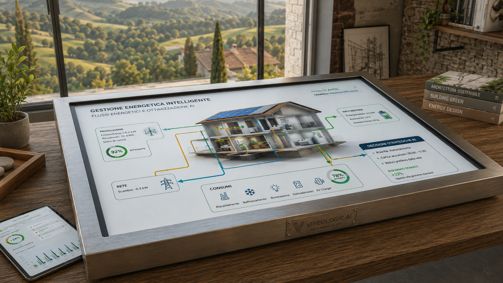
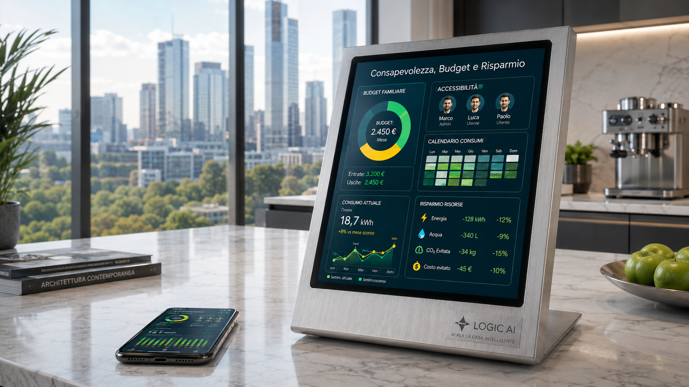
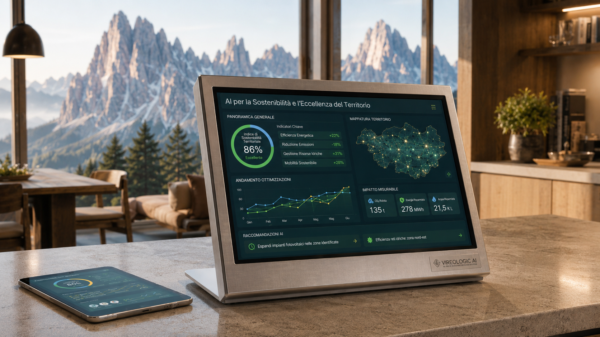
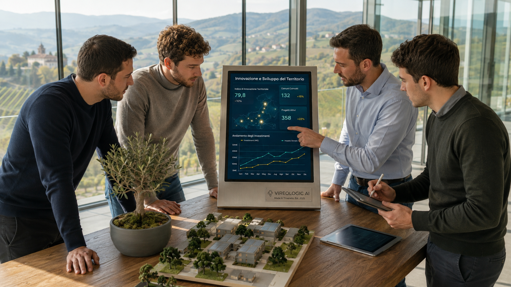

Chi siamo
Siamo una startup italiana con sede nel Triveneto e nata nel 2026 con l’obiettivo di introdurre un prodotto innovativo nel mercato della domotica: VireoLogic AI.
Non è un semplice hub domotico, ma un'infrastruttura "Edge AI" che elabora i dati localmente per la privacy e funge da cervello della casa o dell'azienda ottimizzando il consumo delle risorse.
Permette uno stile di vita e un approccio abitativo volti a ridurre a zero le emissioni nette di gas serra, il "Net Zero Living".
Il Team: le menti dietro VireoLogic AI
| Socio | Ruolo | Responsabilità Principali |
|---|---|---|
| Gici Matias |
Finance & Controlling | Analisi dei costi, confronto make-or-buy, controllo budget. |
| Lovat Leonardo |
Operations & Production | Gestione operativa interna, controllo qualità, monitoraggio ore uomo. |
| Maso Alberto |
IT & Innovation | Ottimizzazione dei processi, automazione, analisi dati e reportistica. |
| Piccolo Alessandro |
Business Development | Gestione relazioni esterne, contrattazione con i fornitori. |
Mission
Vogliamo ridefinire il rapporto tra l'uomo, l'abitare e l'ambiente attraverso una tecnologia che non sia solo "smart", ma anche profondamente consapevole e responsabile.
Vision
"Diventare il punto di riferimento assoluto e il leader indiscusso a livello nazionale nel settore della domotica integrata con Intelligenza Artificiale decentralizzata, tracciando la rotta per un'espansione globale nei mercati internazionali chiave entro i prossimi tre anni."
Il significato della nostra Vision
Per noi di E-Symphony, guardare al futuro significa trasformare radicalmente il modo in cui le persone e le imprese interagiscono con i propri spazi.
- Il Primato Nazionale: vogliamo che il mercato italiano riconosca in E-Symphony il sinonimo di eccellenza.
- L'Espansione Globale: la nostra architettura è scalabile per natura e può varcare i confini nazionali.
- La Decentralizzazione Etica: immaginiamo un futuro in cui ogni edificio sia un ecosistema sicuro che lavora localmente.
I PILASTRI FONDAMENTALI DELLA NOSTRA AZIENDA
INNOVAZIONE TECNOLOGICA CON AI
Non ci accontentiamo di semplicemente automatizzare, ma vogliamo orchestrare. Utilizziamo l'Intelligenza Artificiale per trasformare i dati grezzi in decisioni strategiche.


SOSTENIBILITÀ AMBIENTALE RADICALE
Il nostro obiettivo è il Net Zero Living. Ogni linea di codice di VireoLogic AI è scritta per ridurre l'impronta carbonica e preservare acqua ed energia.
CONSAPEVOLEZZA E ACCESSIBILITÀ
Vogliamo democratizzare l'efficienza. La nostra AI è progettata per rispettare i vincoli economici degli utenti e adattarsi alla vita reale.


RADICAMENTO ED ECCELLENZA TERRITORIALE
Nati nel cuore del Triveneto, portiamo nel mondo l'eccellenza del Made in Italy. Valorizziamo i distretti industriali locali e le specificità del territorio.
ETICA DEI DATI E SEMPLICITÀ
Promuoviamo un'innovazione non invasiva. Grazie alla tecnologia Edge AI, garantiamo la massima privacy elaborando i dati localmente.
"In E-Symphony, trasformiamo la logica dell'intelligenza artificiale nell'armonia del vivere sostenibile."
